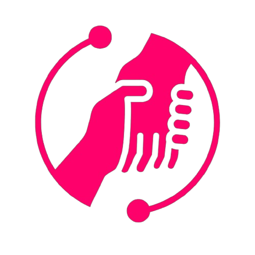
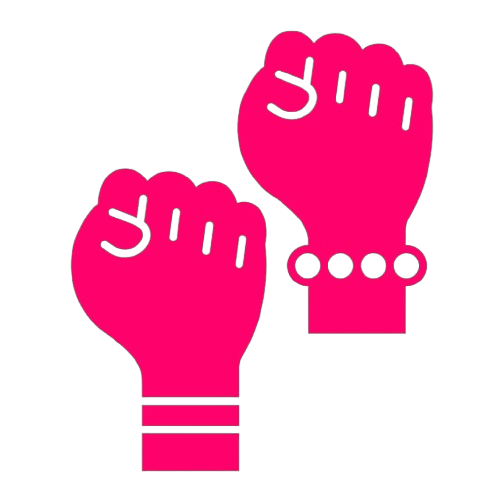

A Associação Mata Sul de Pessoas Lésbicas, Gays, Bissexuais, Travestis,
Transgêneros e Transexuais (AMAS LGBT) é uma organização notável na região
da Mata Sul de Pernambuco, que tem como missão é promover a igualdade de
direitos e combater a discriminação e o preconceito contra a
comunidade LGBTQ+.
Advocacia e Educação
A AMAS trabalha incansavelmente para sensibilizar a sociedade e as autoridades
sobre as questões que afetam a comunidade LGBTQ+. Isso engloba a promoção de
campanhas de conscientização, palestras e workshops educacionais para combater
o preconceito e promover a aceitação

Apoio e Acolhimento
A organização oferece um espaço seguro e acolhedor para a comunidade LGBTQ+ da Mata Sul. Através
de grupos de apoio e aconselhamento, a AMAS ajuda a combater a solidão e o isolamento que muitos
indivíduos LGBTQ+ enfrentam.
Eventos Culturais e Comemorativos
A AMAS promove eventos culturais que celebram a diversidade da comunidade LGBTQ+. A AMAS promove
eventos culturais que celebram a diversidade da comunidade LGBTQ+. Esses eventos não só celebram a
cultura, mas também desafiam os estereótipos e destacam a riqueza da diversidade.
Mas também desafiam os estereótipos e destacam a riqueza da diversidade.

Luta por Direitos
A AMAS é uma defensora ativa dos direitos da comunidade LGBTQ+.
Através de parcerias com outras organizações e ações legais,
a AMAS procura garantir que todos tenham acesso igual a direitos civis,
incluindo o casamento igualitário, a adoção e a proteção contra a discriminação.
Rede de Apoio
A AMAS estabelece parcerias com outras organizações,
profissionais de saúde e líderes comunitários para criar redes
de apoio sólidas para a comunidade LGBTQ+. Isso inclui o acesso
a serviços de saúde sensíveis às questões de gênero e sexualidade.